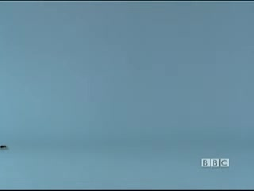
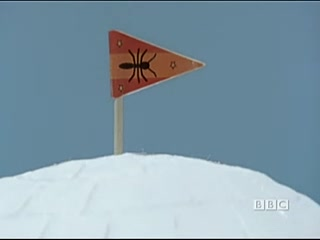
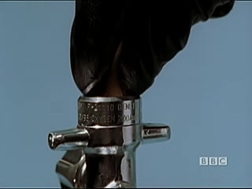
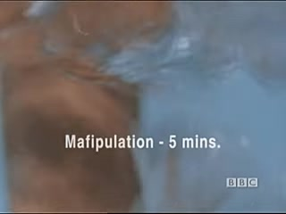
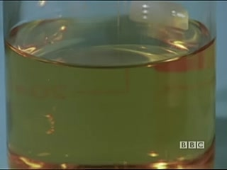
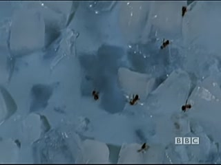

transcription of Look Around You: Water

These ants have been trained to design and build an igloo using tiny blocks of ice.
Once the igloo is complete, the ants take a well-deserved rest.
We'll come back to the ants later.
In the meantime,

Thanks, ants.
Thanks.
Experiment 2.
An experiment was carried out to determine the effects of nitrogen gas upon water.
First, a sample of water was taken.
!
Next, a Jane Grey's pipe is fitted to the nozzle of a canister of nitrogen.
Thank you.

The Jane Grey is placed in the beaker of water.
We're using about 10 pence worth of gas.
Now we turn on the canister to release nitrogen.
The gas miffipulates gently through the jane grey and into the water, causing bubbling.
Thank you.

The mafipulation is allowed to continue for five minutes.
When the time is up, we turn off the gas and free the Jane Grey from the beaker.
Now let's take a look at our water sample.
If you look carefully, you'll notice that the water has changed colour from invisible,
Invisible,

to brown.
What we have produced is imbenzaline nitrotamine,
more commonly known as whiskey.
Whisky is a pleasant tasting, thirst quenching drink, and it's enjoyed by all.
Now let's rejoin the ants and see how they're settling into their igloo.
A change has taken place.
The end is a change has taken place.
The

Igloo appears to have melted.
Perhaps the scientist forgot to turn off a bunsen.
Water, water, water, what hast thou donest?
Bless you, ants.
Blance.
The